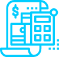
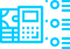
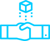
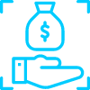

Issue
Digital asset exchanges lose millions of dollars in business every year because they
cannot effectively attract Clients' funds:
The absolute majority of digital
asset exchanges do not support
fiat deposits and withdrawals.

International banking transactions
are often inaccessible and
inconvenient for users.

Payment systems such as QIWI,
AdvCash, Yandex Money, etc.
charge very high transaction fees
of up to 9% of the transaction amount.

Existing intermediaries are
unreliable, as they do not allow
users to deposit funds to their own
accounts with digital assets
exchanges, all deposits are made
to
intermediaries’ accounts.
Syndex Solution
Syndex decentralized payment system is an effective and reliable solution for deposit and withdrawal of users’ fiat funds with a minimum transaction fee that works with any digital asset exchange.
The system is built on the principles of decentralization, which makes it very stable and reliable. Syndex unites a network of traders, cryptocurrency exchanges, OTC-platforms, payment providers around the world.
Every user’s operation in the Syndex system is secure and is further ensured by a special deposit in the amount of a relevant transaction.
Users can deposit and withdraw funds in any fiat or digital currency, with automatic conversion.Syndex charges up to 1% of the transaction amount for each deposit and withdrawal.
Solution for users of digital asset exchanges
Regardless of the location of a digital assets exchange, Syndex allows any user to fund his account with the exchange by a wire transfer from any jurisdiction convenient for him. For example, a user from People Republic of China can deposit fiat funds to his account by a wire transfer to a bank account opened with a Chinese bank, a EU resident - to an account in the SEPA system, or make a payment through PayPal, Skrill, or another payment system.For withdrawals, a User can specify any bank account convenient for him. For example, a user from Italy may receive funds for an account opened with a bank in Hong Kong.
Solution for digital asset exchanges
In order to start working with fiat funds of its users, a digital asset exchange needs to simply register for an account with the Syndex system, and add an option for their users to deposit and withdraw fiat funds on the exchange (e.g. “through Syndex payment system”).Funds that come from users are stored in the Syndex system and can be withdrawn by the exchange in any fiat or digital currency at any time.
Traction
Syndex payment system is fully developed and is currently being tested.

Partners

Customers